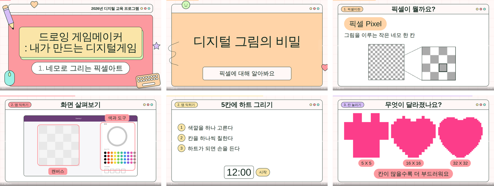

초·중·고 수업 교안의 디자인을 코드에 고정해 두고, 매 차시 쓰는 건 내용뿐입니다. 명세 파일 하나에서 슬라이드 한 벌이 나옵니다.
아래 여섯 장 모두 명세 파일 하나에서 자동으로 만들어졌습니다.

색·글자 크기·장식 위치는 한 줄도 쓰지 않습니다.
{
"meta": { "course": "드로잉 게임메이커",
"lessonTitle": "네모로 그리는 픽셀아트" },
"slides": [
{ "type": "term", "title": "픽셀이 뭘까요?",
"term": "픽셀 Pixel",
"def": "그림을 이루는 작은 네모 한 칸" },
{ "type": "activity", "title": "5칸에 하트 그리기", "timer": 12 }
]
}
챕터 색 순환, 장식 배치, 제목 크기, 챕터 라벨을 도구가 정합니다.
한 줄 20자·글머리표 4개·활동 3단계·어려운 낱말을 빌드가 잡아냅니다.
목차 점프, 발표자 노트, 활동 타이머, 화면 가리기, PDF 내보내기.